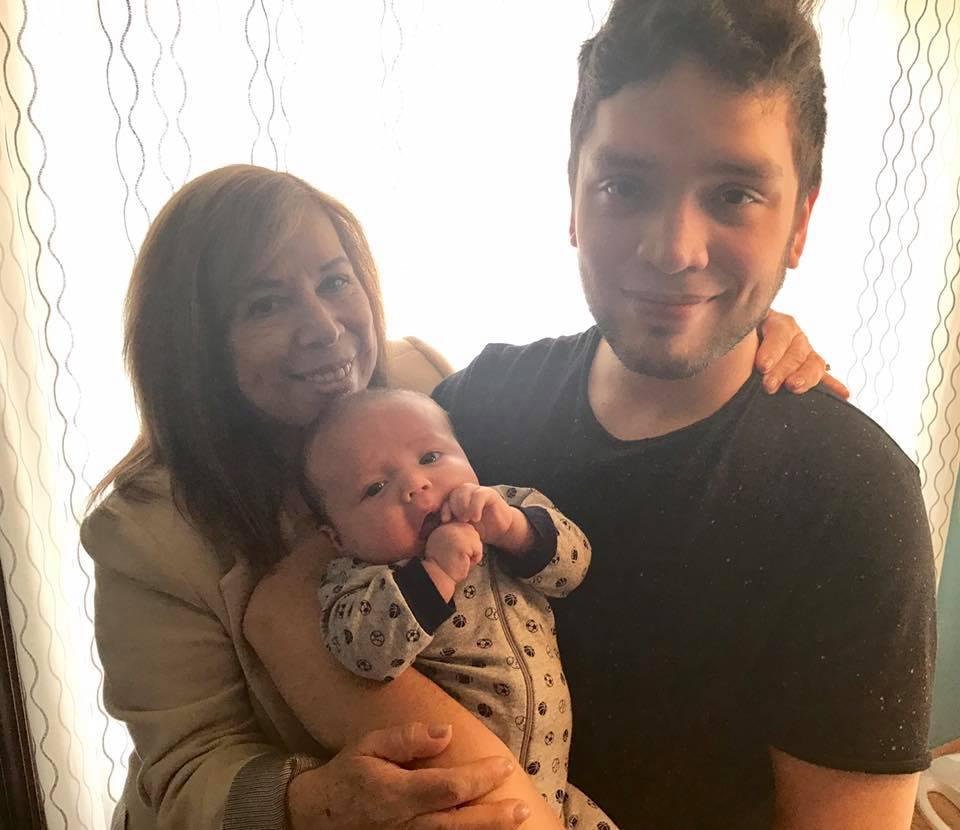

About Me

Born on September 22, 1989 to a family of five - I have spent my years throughout various parts of New Jersey with my two sisters and parents. I spent the first few years of my life in Harrison, NJ until my 9th birthday when my family moved to Sayreville. A year later we moved again and settled down in Belleville. It was not until my 22nd birthday that I moved to Bayonne, where I currently live with my partner of seven years. Now with three nephews and a niece and my sister's respective partners, our family has grown quite a bit! To the left is an image - from left to right, my mother Nancy, my nephew of four months Daniel, and myself looking like the baby's daddy - exhausted and overworked! Well, maybe just a little on the sleepy puffy faced side...we'll go with that.
My hobbies and interest vary far and wide. Varying from mixed media arts to performance arts - you can be certain I've dabbled in it! My appreciation for technology and video games has led me to where I am today. I hope to achieve better web development skill by the end of this class. I want to leave this boot camp with an indispensible set of skills that will push me forward in the workforce. Coding started off as a hobby, but without the properly structured learning environment I have only taught myself in small bursts of development. Having been in the workforce for about 8 years floating from retail to position to retail position, I became quickly disillusioned with no real set goal. What I want to o do come November is be able to use the skills I've learned to catapult myself into the workforce where I can hone my skills and become a more valuable asset. I want to find myself in a position where I can use my passion for art, video games, and technology. If I can pursue something I genuinely enjoy - that would be enormous.
Pulling back to the present - when this class is over, I will continue to use the skills you have provided me and expand my knowledge. A programmer is only as good as what he can put out - now more than ever I'm ready to crush this bootcamp!
Connect With Me